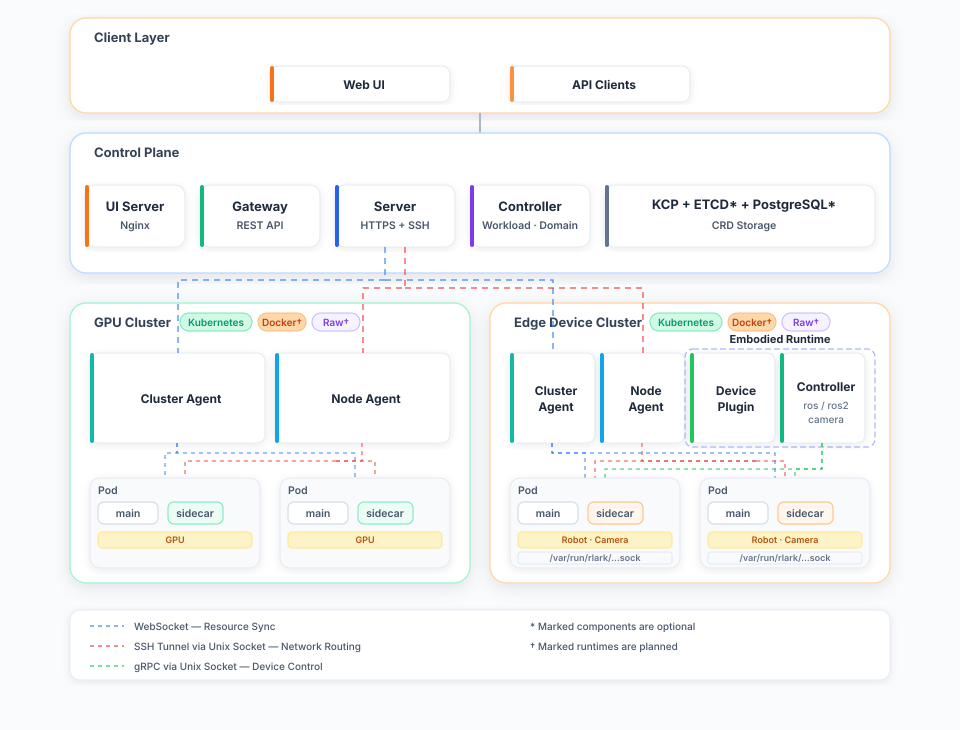

Technical Architecture¶
1. Design Goals¶
rlark is an embodied intelligence cloud-native management platform for cross-cluster, multi-runtime scenarios. Core design goals:
- Cloud-to-Edge workload orchestration: From cloud GPU training (RL/LLM) to edge deployment (robot arm, sensor, camera), unified declarative abstraction across the full embodied AI pipeline
- Multi-runtime data plane: Native support for Kubernetes, Docker, and Raw runtimes — GPU clusters run k8s for large-scale training, edge devices run k8s or Docker/Raw for lightweight embodied deployment (Docker/Raw runtimes: framework in place, runtime implementation TODO)
- Cross-cluster resource pooling: Unify GPU clusters and edge devices distributed across different regions into a single logical resource pool
- Direct Pod-to-Pod network communication: Embodied AI workloads require real-time communication between training actors and edge robots, requiring cross-cluster Pods to establish direct TCP connections
- Security isolation: Multi-tenant embodied AI tasks require network isolation — different teams/projects must not access each other's devices or data
2. Overall Architecture¶
rlark uses a control plane—data plane separation architecture. The control plane runs on kcp (Kubernetes Control Plane), and data plane Agents are deployed in each GPU cluster or edge device, supporting k8s, Docker, and Raw runtimes. The embodied-runtime (Device Plugin + Controllers) runs as a DaemonSet on each data plane node to manage robot (ROS 1/2) and camera hardware, exposing them as Kubernetes device resources.

3. Control Plane Components¶
3.1 Server¶
Server is the core of the control plane, responsible for managing all Agent and external client connections.
Key Responsibilities:
| Function | Implementation | Key File |
|---|---|---|
| Agent Tunnel Management | Reverse proxy based on remotedialer; Agent actively connects to Server via WebSocket | handle_proxy.go |
| Certificate Signing | X.509 and SSH certificate issuance/revocation, supporting agent/domain/ssh-guest roles | sign.go |
| SSH Service | Two-phase user SSH authentication (certificate + public key), direct-tcpip channel forwarding | ssh_server.go |
| Peer Interconnection | Server-to-Server P2P connections for high availability | peer_manager.go |
| K8s Proxy | Forward K8s API requests to data plane clusters via Agent tunnels | kube_proxy.go |
| Pod Cache | In-memory Pod cache based on Informer for fast SSH Pod lookup | caches/pod_cache.go |
Agent Connection Lifecycle:
sequenceDiagram
participant A as Agent
participant S as Server
Note over A: Startup
A->>S: 1. Establish HTTPS WebSocket connection with client certificate
S->>S: 2. handleProxyConnect validates certificate
S->>S: 3. registerAgent() creates RBAC<br/>(ClusterRole + ClusterRoleBinding)
S->>S: 4. AgentBroadcaster broadcasts Agent presence
Note over A,S: 5. Tunnel established, control plane can access Agent local services
3.2 Gateway¶
Gateway is the user-facing HTTP API gateway providing RESTful interfaces.
Key Responsibilities:
| Function | Route | File |
|---|---|---|
| CRD CRUD | GET/POST/PUT/PATCH/DELETE /api/v1/rlinf.io/v1alpha1/{resource} |
router.go |
| Certificate Management | POST /api/v1/certificates/agent |
cert_handler.go |
| SSH Keys | GET/POST/DELETE /api/v1/ssh-user-keys |
suk_handler.go |
| Pod Logs | GET /api/v1/.../jobs/:name/logs |
job_logs.go |
| Prometheus Metrics | Middleware | metrics.go |
3.3 Controller-Manager¶
Controller-Manager runs in the control plane, coordinating the lifecycle of high-level resources.
Controller List:
| Controller | Responsibility | Key File |
|---|---|---|
| Job Controller | Split Job into Tasks, drive state machine (Pending→Running→Succeeded/Failed) | job/ |
| Domain Controller | Manage Domain CRD, allocate IP subnets, sign DomainPeer certificates | domain/ |
| Task Controller | Watch Task status, sync to corresponding Job | task/ |
| Node Controller | Watch Node registration/offline events | node/ |
| Workflow Controller | DAG orchestration, schedule Jobs in dependency order | workflow/ |
Job State Machine:
stateDiagram-v2
[*] --> Pending : init
Pending --> Running : tasks-running
Running --> Failed : any-task-failed
Running --> Succeeded : all-tasks-succeeded
Failed --> [*]
Succeeded --> [*]
4. Data Plane Components¶
4.1 Agent¶
Agent is deployed in each data plane cluster with two operating modes:
| Mode | Component | Responsibility |
|---|---|---|
cluster |
clusterAgent | Resource sync: Pull controllers (control plane CR → local k8s resources) + Push controllers (local k8s state → control plane CR) |
node |
nodeAgent | Network routing: Runs NodeServer, handles cross-cluster Pod traffic forwarding |
clusterAgent Controllers:
graph LR
subgraph mgmt["Control Plane (kcp)"]
task[Task CR]
node[Node CR]
pod[Pod CR]
end
subgraph local["Local Cluster (kind/k8s)"]
deploy[Deployment]
k8snode[K8s Node]
k8spod[K8s Pod]
end
task -->|Pull Controller| deploy
node -->|Push Controller| k8snode
pod -->|Push Controller| k8spod
Pull Controller (Task example):
- Watch control plane Task CR create/update/delete events (with finalizer protection)
- Build corresponding K8s resources (Deployment/DaemonSet/StatefulSet) from Task.Spec
- Detect ResourceVersion changes to decide whether to update existing workloads
- Auto-inject Network Sidecar container and Ray initialization scripts
- On deletion, clean up local resources via finalizer then remove finalizer
Push Controller:
- Watch local K8s resource changes (Pod create/delete/status changes)
- Sync state to corresponding control plane Pod CR
- Periodically report Node info (addresses, capacity, GPU count)
4.2 Network Sidecar¶
Sidecar is injected as a container into each training Pod, enabling cross-cluster Pod-to-Pod network communication.
Key File: sidecar/server.go
Dual Role:
graph LR
subgraph outbound["Outbound"]
o1[Pod Process] --> o2[TUN Device] --> o3[gVisor Netstack] --> o4[Unix Socket] --> o5[NodeServer] --> o6[SSH Tunnel] --> o7[Target Pod]
end
subgraph inbound["Inbound"]
i1[Remote NodeServer] -->|TCP| i2[Proxy :5700] --> i3[Target Pod Process]
end
Startup Process:
- Obtain virtual IP and subnet prefix from NodeServer's
/get_ipendpoint - Start Proxy listener (
:5700) to receive forwarded connections from other Pods - Create TUN device + gVisor netstack to intercept Pod outbound traffic
- Send outbound traffic to NodeServer via Unix socket for routing
4.3 NodeServer¶
NodeServer runs on each node (managed by nodeAgent), handling node-level network routing.
Key File: nodeserver/server.go
Core Functions:
- Accept Unix socket connections from Sidecar, parse target addresses
- Call
ContainerNetworkAdapterto locate target Pod across all DomainPeers - Same cluster: direct TCP connection to target Pod's Proxy
- Cross-cluster: SSH tunnel through Server, then forward to target Agent's NodeServer
4.4 ContainerNetworkAdapter¶
Key File: container/network.go
Routing Decision:
func (a *containerNetworkAdapter) GetContainerNetworkDial(...) (utils.Dial, error) {
// 1. Same cluster → direct TCP to target Pod's Proxy
if targetPod.GlobalNamespace == a.globalNamespace {
return dialer.DialContext("tcp", targetPod.LocalIP + ":57")
}
// 2. Cross-cluster → SSH tunnel
return a.sshDialer.DialContext(ctx, domainID, sshAddr, cert, key, target)
}
4.5 SSHDialer¶
Key File: container/ssh_dialer.go
Per-Domain SSH connection pool. Design highlights:
- At most one SSH connection per Domain (ssh.Client multiplexing)
- Auto-reconnect on disconnect; concurrent requests wait during reconnection instead of creating separate connections
- Exponential backoff on reconnection failure (1s → 2s → 4s → ... → 30s)
- Background GC closes idle connections (default 10 min timeout)
- Thread-safe; read lock on normal path, no blocking
4.6 Embodied Runtime¶
The embodied-runtime is a node-level component deployed as a DaemonSet on each data plane node, managing robot (ROS 1/2) and camera hardware. It integrates with the Agent to expose physical devices as Kubernetes device resources (rlinf.io/device), allowing training Tasks to request robot arms and cameras just like GPU resources.
Key Files: apps/embodied-runtime/
Component Overview:
| Component | Responsibility | Key File |
|---|---|---|
| Device Plugin | Registers rlinf.io/device with kubelet; detects node-local hardware; injects sockets and CLI binaries into Task Pods |
plugin.go |
| Mutating Webhook | Auto-injects devinit init container into Pods requesting rlinf.io/device; manages CA certificate and serving certificate |
webhook.go |
| ros-controller | Manages ROS 1 (roscore + roslaunch) robot lifecycle; exposes gRPC API via Unix socket |
roscontroller/ |
| ros2-controller | Manages ROS 2 robot lifecycle; exposes gRPC API via Unix socket | ros2controller/ |
| camera-controller | Manages camera (V4L2 / RTSP / RealSense) lifecycle; ffmpeg transcoding; exposes gRPC API via Unix socket | cameracontroller/ |
| CLI (rosctr / camctr) | Command-line tools mounted into Task Pods for direct robot/camera control | cmd/rosctr/ |
Device Lifecycle:
- Device Plugin detects hardware (V4L2 cameras, robot controllers) and registers them with kubelet
- Task Pod requests
rlinf.io/deviceresources in its spec - Mutating Webhook intercepts the Pod creation and auto-injects a
devinitinit container (requesting the same resource) that runsdevinit setupto create macvlans in the Pod's network namespace - On Allocate, Device Plugin injects Unix sockets and CLI binaries into the Pod
- The task container communicates with ros-controller / camera-controller via gRPC over Unix sockets
- On Pod termination, Device Plugin cleans up and returns the device to the pool
5. Cross-Cluster Pod Network Data Flow¶
Pod A (Cluster Beijing) accessing Pod B (Cluster Shanghai):
sequenceDiagram
participant PA as Pod A Process
participant SA as Sidecar A
participant NS as NodeServer A
participant CNA as ContainerNetworkAdapter
participant SD as SSHDialer
participant SRV as Server
participant NB as NodeServer B
participant SB as Sidecar Proxy B
participant PB as Pod B Process
PA->>SA: TCP → 10.0.0.5:8080 (Pod B virtual IP)
SA->>SA: TUN device intercepts
SA->>SA: gVisor netstack handles TCP SYN
SA->>NS: Unix socket
NS->>CNA: Look up target Pod location
CNA->>CNA: Check DomainPeer<br/>"10.0.0.5 → agent-shanghai"
alt Same cluster
CNA-->>NS: Direct TCP connection
else Cross-cluster
CNA->>SD: Establish SSH tunnel
SD->>SRV: SSH direct-tcpip channel
SRV->>SRV: Verify cert role: domain<br/>Permission check: checkHostInDomain()
SRV->>NS: Agent B tunnel
end
NS->>SB: TCP → 10.0.0.5:5700
SB->>PB: Connect real process 10.0.0.5:8080
Note over PA,PB: Bidirectional data forwarding (PipeConnections)
6. Security System¶
6.1 Certificate Hierarchy¶
graph TD
ca[CA Root Certificate]
ca --> agent[Agent Certificate<br/>X.509<br/>Data Plane Access]
ca --> domain[Domain Certificate<br/>X.509<br/>Cross-Cluster Communication]
ca --> ssh[SSH-Guest Certificate<br/>SSH<br/>User SSH Login]
6.2 Permission Model¶
| Certificate Role | Permissions |
|---|---|
agent |
Connect to Server tunnel, proxy K8s API requests |
domain |
Access Pods in the same Domain, establish cross-cluster network connections |
ssh-guest |
SSH login to authorized Pods |
admin |
Issue/revoke certificates, Kubernetes impersonation |
6.3 User SSH Login Flow¶
sequenceDiagram
participant Admin as Administrator
participant GW as Gateway
participant User as User
participant S as Server
participant DB as PostgreSQL
participant Agent as Agent
Admin->>GW: POST /api/v1/ssh-user-keys<br/>{user, public_key}
GW->>DB: Store public key
User->>S: ssh user@server -p 2222
S->>S: Phase 1: Certificate auth (CertChecker)
S->>S: Phase 2: UserKeyFallback
S->>DB: Query user's public keys
DB-->>S: Return public keys
S->>S: Match client public key → Auth success
S->>S: Issue temporary ssh-guest certificate
User->>S: ssh -L 8080:pod-name:8080<br/>(direct-tcpip channel)
S->>S: PodCache lookup for Pod's Agent
S->>Agent: Forward via tunnel to Pod
7. CRD Resource Model¶
flowchart LR
wf["Workflow<br/><i>Cluster</i>"]
job["Job<br/><i>Cluster</i>"]
task["Task<br/><i>Namespaced</i>"]
node["Node<br/><i>Namespaced</i>"]
domain["Domain<br/><i>Cluster</i>"]
dp["DomainPeer<br/><i>Namespaced</i>"]
wf -->|"1:N"| job
job -->|"1:N"| task
task -->|"NodeSelector"| node
task -->|"belongs to"| domain
domain -->|"1:N"| dp
8. Key Design Decisions¶
8.1 Why kcp instead of native k8s API Server?¶
kcp is more lightweight than a native k8s API Server and can run independently without a full Kubernetes cluster, reducing the control plane's resource overhead and operational complexity. Additionally, kcp's native logical cluster concept aligns naturally with rlark's Domain concept, leaving room for future multi-tenant scenarios.
8.2 Why SSH tunnels instead of VPN?¶
VPN solutions require opening the underlying network, which is complex in heterogeneous cluster environments. SSH tunnel approach:
- TCP-based, no network infrastructure changes needed
- Fine-grained permission control via SSH certificates (one certificate per Domain)
- Connection multiplexing (ssh.Client multiplexing) reduces handshake overhead
- Native support for user authentication (SSH public key login)
8.3 Why TUN + gVisor instead of iptables/CNI?¶
iptables/CNI solutions require modifying node network configuration with high privilege requirements. TUN + gVisor approach:
- Runs in userspace; gVisor netstack supports full TCP/UDP/ICMP protocol family (note: creating TUN devices requires privileged access)
- gVisor netstack supports full TCP/UDP/ICMP protocol family
- Can be injected as a Sidecar container, decoupled from business containers